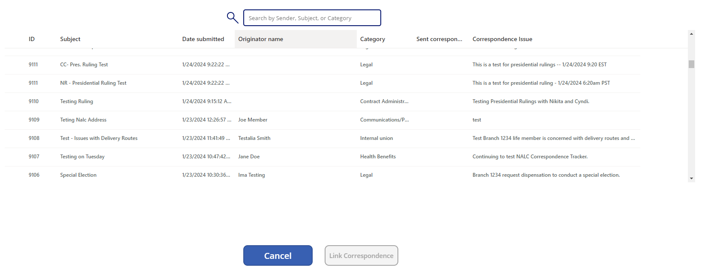

NALC and USPS Correspondence application documentation
New NALC Correspondence
Create New Correspondence

To begin, click on the "+ New" button
Enter Correspondence Details

Here you can see the Correspondence Details form page, with text boxes for Subject and Issue, a dropdown for Category, and date pickers for Received, Letter Dated, and Deadline dates
Select Assignee(s)
There is also a picker for Assignees -- you can begin typing the name of the Assignee and their name will appear -- select their name to assign them to this Correspondence, and add as many Assignees as necessary
NOTE: Be sure to click the checkbox, as this is how to add an Assignee to your new Correspondence -- failing to do so will create a Correspondence without an attached Assignee

After entering all of your text and selecting the Category, dates, and Assignee, you can click on the right arrow (or click on Sender Information on the left side) to progress to Sender Information
Note: a new NALC Correspondence ID will be created once you click the next arrow or on Sender Information -- until this point, an ID has not been created and your text and selections have not been saved, but your text and selections in Correspondence Details will be saved when you progress to Sender Information
Sender Information

Here you can see the Sender Information form page, with text boxes for Sender Name, Street Address, City, State, Zipcode, and Branch
After entering all of your text, you can click on the right arrow (or click on Actions) to progress to Actions
Actions
Here you can see the page for adding and maintaining Actions

To begin, enter your Action details in the large text box -- click the expand button in the top right corner to see your Action in an expanded view, if necessary -- and select your Action Date from the date picker, then click Add Action to insert your Action in the Action list on the left side of the page

Here you can see your Action, with the creator of the Action, date the Action was added, Action details -- you can click on the Remove icon to permanently delete this Action
If you clicked on the Remove icon you will see this pop-up confirmation screen -- click Remove Action to permanently delete this Action
Click on the next arrow (or click on Linked Correspondences) to progress to Linked Correspondences
Linked Correspondences

Here you can see the page for adding Linked Correspondences to your new Correspondence -- click the plus "+" icon to add a new Linked Correspondence

Here you can see the list of all Correspondences available to be linked -- double-click on the Correspondence of your choice to link it to your new Correspondence -- you can search for any Correspondence by beginning to type in any details of the Correspondence that you're looking for: Sender Name, Subject, or Category

Here you can see the Correspondence that you selected and that is now linked to your new Correspondence
To delete a linked Correspondence, click the Remove icon, and you will see this pop-up confirmation screen -- click Remove Correspondence to permanently delete this link to another Correspondence
Attachments

Here you can see the page for adding Attachments to your new Correspondence -- click the paperclip/Attach file to attach Word or PDF files

Here you can see Windows Explorer window that allows you to navigate to the file of your choice on your local PC -- click OK when you've located and selected the file

Now you can see the file name, with the text "Unsaved" -- add any additional attachments necessary for this new Correspondence
To select a date to be associated with your uploaded Attachment(s) click on the date picker and select a date of your choice
After selecting a date and then clicking the Upload Attachments button, you can now see your attachments in the list on the left side of the page

You can click on the View File link to view the uploaded file -- a new browser tab will open and your document will appear
To view your upload in SharePoint, you can click on the blue folder icon in the top left corner (near the Title and Attachment Date of your attachment)

Here you can view all uploaded files in SharePoint associated with this Correspondence, and you can also delete files in this location
Item History

Here you can see all the events in the Item History -- every executable action during the creation of your new Correspondence can be seen here
Edit NALC Correspondence
Select Correspondence to Edit
To begin, double click on the row of the Correspondence that you would like to edit
NOTE: You can search for the Correspondence that you'd like to edit by typing in the ID in the search bar, or you can search by Category, Subject, etc.
Edit Correspondence Details

Here you can see all the fields populated with data for the Correspondence that you're editing -- begin typing in the Subject or Issue text boxes to update the data, select a new Category from the drop-down, change the dates from the date pickers, or search for and add a new Assignee -- click the next arrow to save and continue editing, or the "Disk" icon to save and exit
Edit Sender Information
Here you can see all the fields populated with data for the Sender: Name, Address, City, State, Zipcode, and Branch -- begin typing in any of the fields to update the data -- click the next arrow to save and continue editing, or the "Disk" icon to save and exit
Edit Actions
Here you can see any Actions that were created for this Correspondence -- you can click on the Action and view its details on the right side (where you can update the details or the Action date), you can add a new Action by clicking on the '+' icon in the top right, or you can delete an Action by clicking the remove icon
Edit Linked Correspondences

Here you can see all of any Correspondences that are linked to the Correspondence that you are editing -- to remove a linked Correspondence, click the remove icon, and to link another Correspondence, click the '+' icon at the top right, and select the Correspondence of your choice -- you can search for any Correspondence by beginning to type in any details of the Correspondence that you're looking for: Sender Name, Subject, or Category
Edit Attachments

Here you can see any files that were attached to this Correspondence -- you can remove an attachment by selecting it and then clicking the Remove Attachments button on the bottom right side -- you can add a new Attachment by clicking on Attach file and browsing your local PC for the file of your choice
Item History Edits
Here you can view the item history as well as any additional edits made to this Correspondence
Presidential Rulings
Create New Presidential Ruling
To begin, from inside the Correspondence of your choice you can click on the Gavel icon, and this action will take you to a new Presidential Ruling that will be associated with your NALC Correspondence

Presidential Ruling Details
Here you can see the entry screen for creating your Presidential Ruling, with text boxes for the Issue, Requesting Individual, Requesting Organization, and Formatted Ruling, as well as a date picker for the Signed Date
View/Add Hooks
To add a new or view a hook, click on the green View/Add Hooks button -- here you can see the list of previously created Hooks (if any) -- to create a new Hook, click the Create New Hook button
New Hook Details

To add details for your hook, select a Category from the drop down and enter details for Hook Levels 1-3 in the text boxes
NOTE: the Hook Name will self-populate based on the descriptions entered for Hook Levels 1-3
Here you can see the different Hook Categories to choose from

Here you can see the filled out form for creating a new Hook -- note how the Name is Hook Levels 1-3, appended with two periods
Back on the Details page, you can add a Formatted Ruling and select a Signed Date from the date picker, and you can either: save and return to your Presidential Ruling at another time; or you can click Assign to Executive to notify the executive that they have a new Presidential Ruling to review
NALC Correspondence -- Assignee
Select Correspondence to Review
To begin, double click on the row of the Correspondence that you would like to review
NOTE: You can limit the display of Correspondences in your main list by clicking on the "View Less" button at the top, just below the banner -- additionally, you can search for the Correspondence that you'd like to edit by typing in the ID in the search bar, or you can search by Category, Subject, etc.
Review Correspondence Details

Here on the Details page, you can review all the fields: Subject, Category, Type, Received Date, Letter Dated, Deadline, Issue, and other Assignees, if applicable
To process your Correspondence, the first of two required steps is to select a Sent Date -- the second is to upload an attachment
You can select a Sent Date by clicking in the date box and selecting a date from the date-picker -- click OK to continue
Review Sender Information

Here on the Sender Information page, you can review all the fields to check for accuracy: Sender Name, Street Address, City, State, Zipcode, and Branch
Click the right arrow to proceed to the Actions
Review Correspondence Actions

Here on the Actions page, you can review any previously added Actions and their added dates
Click the right arrow to proceed to Linked Correspondences
Review Linked Correspondence

Here on the Linked Correspondences page, you can review any previously linked Correspondences and their linked dates
Click the right arrow to proceed to Attachments
Review Correspondence Attachments

Here on the Attachments page, you must add an attachment before you can send this Correspondence to the Executive -- to do so, click "Attach file" on the right side of the screen

You can now see the file explorer of your local PC -- click on the file of your choice that you would like to attach to this Correspondence, and click the Open button to attach this file
Next, you must select the date that you would like to associate with this attachment -- after you've selected a date, you can click the Upload Attachments button, or you can remove the attachment by clicking the Remove Attachments button if you've made a mistake
You can now see your attachment for your Correspondence, and, if necessary, you can repeat the above steps to attach another document -- otherwise, click the Right arrow to proceed to Item History
Review Correspondence Item History

Here on the Item History page, you can review all of the actions that have occurred for this Correspondence -- be sure to review that your Attachment history is visible in the list before submitting your Correspondence

To send your assigned Correspondence to the Executive, click the Airplane icon at the bottom of the page
NALC Correspondence -- Assignee (Returned from Executive)
Select Correspondence to Review
To begin, find the Correspondence that was returned to you from the Executive as the Assignee -- you should have received an email notification alerting you about the Correspondence being returned to you
Double click on the row of the Correspondence that you would like to review
View Executive Comments
Here you can see the Correspondence Details, as well as the Executive comments -- these comments should include instructions about why this Correspondence has been returned to you
You can skip to the Attachments page to upload your response to the Executive by clicking on the Attachments link on the left side of the page
Upload Response Attachment(s)

On the Attachments page, you can see your previously uploaded attachments
To respond to the Executive's feedback, you can attach a new file by clicking on "Attach file" on the right side of the screen
You can now see the file explorer of your local PC -- click on the file of your choice that you would like to attach to this Correspondence, and click the Open button to attach this file
Next, you must select the date that you would like to associate with this attachment -- after you've selected a date, you can click the Upload Attachments button, or you can remove the attachment by clicking the Remove Attachments button if you've made a mistake
Review Item History
You can click the airplane icon at the bottom of the page to return this Correspondence to the Executive for final processing
NALC Correspondence -- Executive
Select Correspondence to Review
To begin, find the Correspondence that was sent to you as the Executive
Double click on the row of the Correspondence that you would like to review
Review Correspondence Details

Here you can see the Correspondence Details form page, with text boxes for Subject and Issue, a dropdown for Category, and date pickers for Received, Letter Dated, and Deadline dates
You can also see the Executive Comments box -- here, you can enter feedback and instructions if you would like to return this Correspondence to the Assignee for further processing -- you can return to this screen at a later time to enter comments, if necessary
To further review this Correspondence, click the right arrow to progress to Sender Information
Review Sender Information
Here you can see the fields for the Sender: Sender Name, Street Address, City, State, Zipcode, and Branch
Click the right arrow to progress to Actions
Review Correspondence Actions

Here you can see the Actions that were previously added
Click the right arrow to progress to Linked Correspondences
Review Linked Correspondence

Here you can see any previously linked Correspondences
Click the right arrow to progress to Attachments
Review Attachments
Here you can see any previously added Attachments
Click the right arrow to progress to Item History
Review Item History

Here you can see all events associated with this Correspondence in Item History
After reviewing the entire Correspondence, you can either: click the icon with the checked document to complete this Correspondence; or you can return this Correspondence to the Assignee by navigating back to the Correspondence Details page and entering instructions in the Executive Comments textbox
Click the airplane icon to send this Correspondence back to the Assignee for further processing
NALC Correspondence -- Executive (Returned from Assignee)
Select Correspondence to Review
To begin, find the Correspondence that was returned to you from the Assignee, and double click on it to review the most recent changes
Review Correspondence Details

Here you can review all Correspondence Details, including your previously entered Executive Comments
You can skip to where the Assignee has responded to your comments by navigating to the Attachments section found on the left side of the page
Review Attachments

Here you can review all attachments associated with this Correspondence, including the most recent addition, sent from the Assignee in response to this returned Correspondence
To view the most recent attachment, find the most recent Attachment Date, and click on the View File link to view the attachment for further evaluation
Click the right arrow to progress to Item History
You can navigate back to the Correspondence details page and enter a final Executive comment that communicates that the prior issue is resolved and this Correspondence is now closed
You can click the document icon with the checkmark to finish and finalize this Correspondence

Back on the main screen, you can see your finalized Correspondence, with a Status of Closed with a closed date
New USPS Correspondence
Create New Correspondence
To begin, click on the "+ New" button
Enter Correspondence Details
Here you can see the Correspondence Details form page, with text boxes for Subject and Issue, a dropdown for Category, and date pickers for Received, Letter Dated, and Deadline dates
Select Assignee(s)
There is also a picker for Assignees -- you can begin typing the name of the Assignee and their name will appear -- select their name to assign them to this Correspondence, and add as many Assignees as necessary
NOTE: Be sure to click the checkbox, as this is how to add an Assignee to your new Correspondence -- failing to do so will create a Correspondence without an attached Assignee

After entering all of your text and selecting the Category, dates, and Assignee, you can click on the right arrow (or click on Sender Information on the left side) to progress to Sender Information
NOTE: a new USPS Correspondence ID will be created once you click the next arrow or on Sender Information -- until this point, an ID has not been created and your text and selections have not been saved, but your text and selections in Correspondence Details will be saved when you progress to Sender Information
Actions
Here you can see the page for adding and maintaining Actions

To begin, enter your Action details in the large text box -- click the expand button in the top right corner to see your Action in an expanded view, if necessary -- and select your Action Date from the date picker, then click Add Action to insert your Action in the Action list on the left side of the page
Here you can see your Action, with the creator of the Action, date the Action was added, Action details -- you can click on the Remove icon to permanently delete this Action
If you clicked on the Remove icon you will see this pop-up confirmation screen -- click Remove Action to permanently delete this Action

Click on the next arrow (or click on Linked Correspondences) to progress to Linked Correspondences
Linked Correspondences

Here you can see the page for adding Linked Correspondences to your new Correspondence -- click the plus "+" icon to add a new Linked Correspondence
Here you can see the list of all Correspondences available to be linked -- double-click on the Correspondence of your choice to link it to your new Correspondence -- you can search for any Correspondence by beginning to type in any details of the Correspondence that you're looking for: Sender Name, Subject, or Category

Here you can see the Correspondence that you selected and that is now linked to your new Correspondence

To delete a linked Correspondence, click the Remove icon, and you will see this pop-up confirmation screen -- click Remove Correspondence to permanently delete this link to another Correspondence
Attachments

Here you can see the page for adding Attachments to your new Correspondence -- click the paperclip/Attach file to attach Word or PDF files

Here you can see Windows Explorer window that allows you to navigate to the file of your choice on your local PC -- click OK when you've located and selected the file
Now you can see the file name, with the text "Unsaved" -- add any additional attachments necessary for this new Correspondence
To select a date to be associated with your uploaded Attachment(s) click on the date picker and select a date of your choice
After selecting a date and then clicking the Upload Attachments button, you can now see your attachments in the list on the left side of the page

You can click on the View File link to view the uploaded file -- a new browser tab will open and your document will appear

To view your upload in SharePoint, you can click on the blue folder icon in the top left corner (near the Title and Attachment Date of your attachment)

Here you can view all uploaded files in SharePoint associated with this Correspondence, and you can also delete files in this location
Item History
Here you can see all the events in the Item History -- every executable action during the creation of your new Correspondence can be seen here
Edit USPS Correspondence
Select Correspondence to Edit
To begin, double click on the row of the Correspondence that you would like to edit
NOTE: You can search for the Correspondence that you'd like to edit by typing in the ID in the search bar, or you can search by Category, Subject, etc.
Edit Correspondence Details
Here you can see all the fields populated with data for the Correspondence that you're editing -- begin typing in the Subject or Issue text boxes to update the data, select a new Category from the drop-down, change the dates from the date pickers, or search for and add a new Assignee -- click the next arrow to save and continue editing, or the "Disk" icon to save and exit
Edit Actions

Here you can see any Actions that were created for this Correspondence -- you can click on the Action and view its details on the right side (where you can update the details or the Action date), you can add a new Action by clicking on the '+' icon in the top right, or you can delete an Action by clicking the remove icon
Edit Linked Correspondences
Here you can see all of any Correspondences that are linked to the Correspondence that you are editing -- to remove a linked Correspondence, click the remove icon, and to link another Correspondence, click the '+' icon at the top right, and select the Correspondence of your choice -- you can search for any Correspondence by beginning to type in any details of the Correspondence that you're looking for: Sender Name, Subject, or Category
Edit Attachments

Here you can see any files that were attached to this Correspondence -- you can remove an attachment by selecting it and then clicking the Remove Attachments button on the bottom right side -- you can add a new Attachment by clicking on Attach file and browsing your local PC for the file of your choice
Item History Edits

Here you can view the item history as well as any additional edits made to this Correspondence
USPS Correspondence -- Assignee
Select Correspondence to Review

To begin, double click on the row of the Correspondence that you would like to review
NOTE: You can limit the display of Correspondences in your main list by clicking on the "View Less" button at the top, just below the banner -- additionally, you can search for the Correspondence that you'd like to edit by typing in the ID in the search bar, or you can search by Category, Subject, etc.
Review Correspondence Details

Here on the Details page, you can review all the fields: Subject, Category, Type, Received Date, Letter Dated, Deadline, Issue, and other Assignees, if applicable
Click the right arrow to proceed to Actions
Review Correspondence Actions

Here on the Actions page, you can review any previously added Actions and their added dates
Click the right arrow to proceed to Linked Correspondences
Review Linked Correspondence

Here on the Linked Correspondences page, you can review any previously linked Correspondences and their linked dates
Click the right arrow to proceed to Attachments
Review Correspondence Attachments

Here on the Attachments page, you must add an attachment before you can send this Correspondence to the Executive -- to do so, click "Attach file" on the right side of the screen
You can now see the file explorer of your local PC -- click on the file of your choice that you would like to attach to this Correspondence, and click the Open button to attach this file
Next, you must select the date that you would like to associate with this attachment -- after you've selected a date, you can click the Upload Attachments button, or you can remove the attachment by clicking the Remove Attachments button if you've made a mistake

You can now see your attachment for your Correspondence, and, if necessary, you can repeat the above steps to attach another document -- otherwise, click the Right arrow to proceed to Item History
Review Correspondence Item History
Here on the Item History page, you can review all of the actions that have occurred for this Correspondence -- be sure to review that your Attachment history is visible in the list before submitting your Correspondence
To send your assigned Correspondence to the Executive, click the Airplane icon at the bottom of the page
USPS Correspondence -- Assignee (Returned from Executive)
Select Correspondence to Review
To begin, find the Correspondence that was returned to you from the Executive as the Assignee -- you should have received an email notification alerting you about the Correspondence being returned to you
Double click on the row of the Correspondence that you would like to review
View Executive Comments

Here you can see the Correspondence Details, as well as the Executive comments -- these comments should include instructions about why this Correspondence has been returned to you
You can skip to the Attachments page to upload your response to the Executive by clicking on the Attachments link on the far left side of the page
Upload Response Attachment(s)
On the Attachments page, you can see your previously uploaded attachments
To respond to the Executive's feedback, you can attach a new file by clicking on "Attach file" on the right side of the screen
You can now see the file explorer of your local PC -- click on the file of your choice that you would like to attach to this Correspondence, and click the Open button to attach this file
Next, you must select the date that you would like to associate with this attachment -- after you've selected a date, you can click the Upload Attachments button, or you can remove the attachment by clicking the Remove Attachments button if you've made a mistake
USPS Correspondence -- Executive
Select Correspondence to Review

To begin, find the Correspondence that was sent to you as the Executive
Double click on the row of the Correspondence that you would like to review
Review Correspondence Details

Here you can see the Correspondence Details form page, with text boxes for Subject and Issue, a dropdown for Category, and date pickers for Received, Letter Dated, and Deadline dates
You can also see the Executive Comments box -- here, you can enter feedback and instructions if you would like to return this Correspondence to the Assignee for further processing -- you can return to this screen at a later time to enter comments, if necessary
To further review this Correspondence, click the right arrow to progress to Actions
Review Correspondence Actions
Here you can see the Actions that were previously added
Click the right arrow to progress to Linked Correspondences
Review Linked Correspondence

Here you can see any previously linked Correspondences
Click the right arrow to progress to Attachments
Review Attachments

Here you can see any previously added Attachments
Click the right arrow to progress to Item History
Review Item History

Here you can see all events associated with this Correspondence in Item History
After reviewing the entire Correspondence, you can either: click the icon with the checked document to complete this Correspondence; or you can return this Correspondence to the Assignee by navigating back to the Correspondence Details page and entering instructions in the Executive Comments textbox -- click the airplane icon to send this Correspondence back to the Assignee for further processing
USPS Correspondence -- Executive (Returned from Assignee)
Select Correspondence to Review
To begin, find the Correspondence that was returned to you from the Assignee, and double click on it to review the most recent changes
Review Correspondence Details
Here you can review all Correspondence Details, including your previously entered Executive Comments
Click the right arrow to progress to Actions
Review Attachments

Here you can review all attachments associated with this Correspondence, including the most recent addition, sent from the Assignee in response to this returned Correspondence
To view the most recent attachment, find the most recent Attachment Date, and click on the View File link to view the attachment for further evaluation
Click the right arrow to progress to Item History
Here you can enter a final comment that will close this Correspondence

You can now click the page icon with the checkmark to complete and finalize this Correspondence
Back on the main screen, you can see your close and finalized Correspondence, with a Status of Close with a closed date